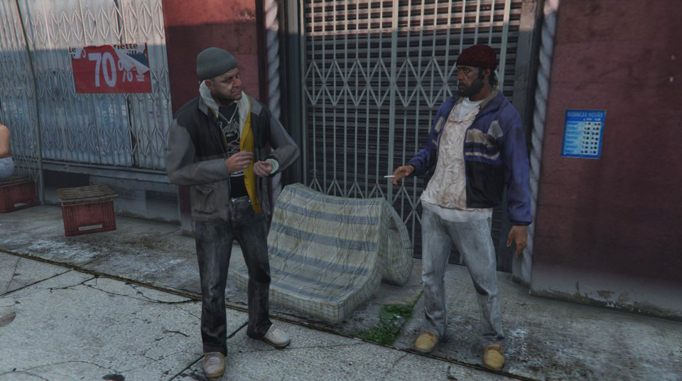
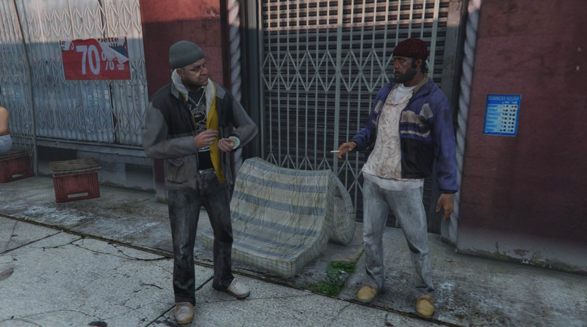

The Photographer's Guide to Los Santos
Preface
1
Introduction
1.1
Why Los Santos?
1.2
Grand Theft Auto V Tourism
1.3
Grand Theft Auto V Art Education
2
Social Documentary
2.1
Down and Out in Los Santos
by Alan Butler
2.1.1
location:
2.2
Fear and Loathing in GTA V
by Morten Rockford Ravn
2.2.1
location:
2.3
Tutorial: in-game smartphone camera
2.4
Content Replication Assignment:
3
Architecture Photography
3.1
from
The Continuous City
, by Gareth Damian Martin
3.2
Interview with Gareth Damian Martin
3.3
Tutorial: photographing the game screen
3.3.1
analogue game photography
3.3.2
screenshotting
3.4
Content Replication Assignment:
4
Re-enactment photography
4.1
A Study on Perspective
by Roc Herms
4.2
Little Books of Los Santos
by Luke Caspar Pearson
4.3
_Nine swimming pools and a broken glas_s by Alan Butler
4.4
26 Gasoline stations in GTA V
by Lorna Ruth Galloway
4.5
26 Gasoline stations in GTA V
by M. Earl Williams
4.5.1
locations:
4.6
Tutorial: scene director mode
4.7
Content Replication Assignment
5
Nature Documentary
5.1
Deercam by Brent Watanabe
5.1.1
locations:
5.2
Virtual Flora
5.2.1
locations:
5.3
Tutorial: modding introduction
5.3.1
Preparation and setup
5.3.2
Creating a mod file
5.3.3
Change player model
5.4
Content Replication Assignment:
6
Surrealist Photography
6.1
Alexey Andrienko aka HAPP v2
6.2
Tutorial: modding
6.2.1
NPCs
6.3
Content Replication Assignment:
Published with bookdown
The Photographer’s Guide to Los Santos
2
Social Documentary
2.1
Down and Out in Los Santos
by Alan Butler

text and artwork
2.1.1
location:
2.2
Fear and Loathing in GTA V
by Morten Rockford Ravn
text and artwork
2.2.1
location:
2.3
Tutorial: in-game smartphone camera
2.4
Content Replication Assignment:
2 Social Documentary
2.1 Down and Out in Los Santos by Alan Butler

text and artwork
2.1.1 location:
2.2 Fear and Loathing in GTA V by Morten Rockford Ravn
text and artwork
2.2.1 location:
2.3 Tutorial: in-game smartphone camera
2.4 Content Replication Assignment: